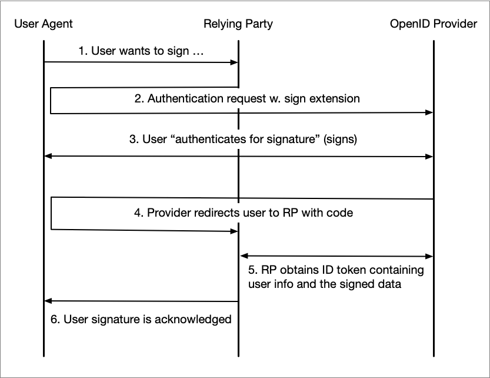

Signature Extension for OpenID Connect
Version: 1.2 – 2026-10-08 – Draft
Abstract
This specification defines an extension to OpenID Connect to facilitate use cases where a Relying Party sends a "Signature Request" to an OpenID Provider. A signature request is an extension of an OpenID Connect authentication request where a "Signature Request" object is passed as a request parameter or a Request Object.
Table of Contents
-
2.1. Signing
2.2. Signature Approval
-
3.1. The Signature Request Parameter
3.1.1. Placement of the Parameter in an Authentication Request
3.1.2. Security Requirements
3.2. Scopes
3.2.1. Signature Scope
3.2.2. Signature Approval Scope
-
4.1. Requests
4.1.1. Requirements on Signing User
-
5.3. Discovery
1. Introduction
This specification defines an extension to OpenID Connect to facilitate that a user digitally signs data provided by a Relying Party at the OpenID Provider.
The rationale behind this specification is that the OIDC Sweden Working Group has seen the need to offer a standardized OpenID Connect way of handling both authentication and signature since most eID providers in Sweden supports both authentication and signing.
This specification should not be seen as a competitor to any of the full-blown signature specifications such as OASIS DSS, but instead as the OpenID Connect-equivalent to the proprietary API:s offered by eID providers. In fact, this specification says nothing about signature formats, validation or any other part of the complex world of digital signatures.
The specification also defines mechanisms for "signature approval", where no signature operation is performed at the OpenID Provider, but when the OP performs the "authentication for signature".
Note: This specification is written in the context of the The Swedish OpenID Connect Profile, [OIDC.Sweden.Profile], and therefore compliance with this specification also requires compliance with [OIDC.Sweden.Profile].
1.1. Requirements Notation and Conventions
The key words “MUST”, “MUST NOT”, “REQUIRED”, “SHALL”, “SHALL NOT”, “SHOULD”, “SHOULD NOT”, “RECOMMENDED”, “MAY”, and “OPTIONAL” are to be interpreted as described in [RFC2119].
These keywords are capitalized when used to unambiguously specify requirements over protocol features and behavior that affect the interoperability and security of implementations. When these words are not capitalized, they are meant in their natural-language sense.
2. The Use Cases
2.1. Signing
The main use case that this specification seeks to find an OpenID Connect solution to is as follows:
The Relying Party delegates the signing operation to the OpenID Provider by sending an authentication request with a sign extension. The flow below illustrates each step in for this delegated signing model.

The user wants to sign something at the Relying Party, for example a form, and clicks "Sign".
The Relying Party (client) initiates an "authentication for signature" by redirecting the user to the OpenID Provider along with an authentication request containing a sign extension (see section 3.1 below).
During the authentication/signing the user actually performs a signature of the "to-be-signed" data that was supplied as an extension to the authentication request. In this step the OpenID Provider also displays a summary of what is being signed.
After a completed signature operation the user agent is redirected back to the client along with an authorization code.
Next, the client obtains an ID token that contains information about the signee along with the signed data.
Finally, the completed signature operation is acknowledged to the user.
Note: Only OpenID Providers that has signature capabilities can support this use case.
2.2. Signature Approval
In some cases an authentication service, such as an OpenID Provider, is only involved indirectly in a signing process. The actual signing operation may take part in a dedicated "Signature Service", but this service may need to authenticate the user that is about to sign data. Often, the Signature Service will direct the user to an external authentication service (such as an OP). This kind of authentication serves several purposes:
To determine the user's identity before proceeding with the signature operation.
To make the user understand that he or she is performing a signature operation.
To obtain proof from the authentication service (OP) that the user has approved the signature operation.
An OpenID Provider supporting this use case does not have to have signature capabilities itself.
Note: An signature request as described in section 2.1 is per definition also a signature approval.
3. Identifiers
This section extends [OIDC.Sweden.Claims] with definitions of parameters, claims and scopes used for the use cases defined in this specification.
3.1. The Signature Request Parameter
Parameter: https://id.oidc.se/param/signRequest
Description: The signature request parameter is included in an authentication request by the Relying Party in order to supply the input for a signature-, or a signature approval operation.
Value type: The value for the signature request parameter claim is a JSON object1 with the following fields:
tbs_data- The data to be signed as a Base64-encoded string. This specification does not specify the format on the supplied data. It is regulated by the signature scheme being used.
For the sign use case, i.e., if the request contains thehttps://id.oidc.se/scope/signscope (3.2.1) the field MUST be present. If the request is for a signature approval, meaning that the request scope contains thehttps://id.oidc.se/scope/signApprovalscope (3.2.2) and does not include thehttps://id.oidc.se/scope/signscope, the field MUST NOT be present.sign_message- A sign message is the human readable text snippet that is displayed to the user as part of the signature2 or signature approval processes. Thesign_messagefield is a JSON object according to thehttps://id.oidc.se/param/userMessagerequest parameter as defined in section 2.1 of [OIDC.Sweden.Params]. This field MUST be present.
Profiles extending this specification MAY introduce additional fields.
Examples:
Example of using the signRequest parameter for signing. The supplied to-be-signed data is often
a hash of the document that is to be signed.
The sign messages "I hereby agree to the contract displayed" (in English) and "Jag samtycker härmed till kontraktet som visats" (in Swedish) are text strings that refer to the Relying Party's view displayed for the user before signing was requested.
...
"https://id.oidc.se/param/signRequest" : {
"tbs_data" : "<Base64-encoded data>",
"sign_message" : {
"message#en" : "SSBoZXJlYnkgYWdyZWUgdG8gdGhlIGNvbnRyYWN0IGRpc3BsYXllZA==",
"message#sv" : "SmFnIHNhbXR5Y2tlciBow6RybWVkIHRpbGwga29udHJha3RldCBzb20gdmlzYXRz",
"mime_type" : "text/plain"
}
},
...During signature approval, the user perceives the operation in the same way he or she would for the signature use case. The only difference is that the actual signing process is not performed by the OP. In the example below, no to-be-signed data is provided (and for illustration purposes, a message with no language tag is provided).
...
"https://id.oidc.se/param/signRequest" : {
"sign_message" : {
"message" : "SSBoZXJlYnkgYWdyZWUgdG8gdGhlIGNvbnRyYWN0IGRpc3BsYXllZA==",
"mime_type" : "text/plain"
}
},
...[1]: Depending on where in a request the parameter is placed, the value may be a JWT, see section 3.1.1 below.
[2]: Whether the contents of the sign message is part of the signature input data at the OpenID Provider or not is not regulated by this profile.
3.1.1. Placement of the Parameter in an Authentication Request
The https://id.oidc.se/param/signRequest request parameter can be provided in an authentication request in two ways; as a custom request parameter where its value is represented as a JWT, or as part of a Request Object that is the value to the request (or request_uri) parameter.
It is RECOMMENDED that a Relying Party pass the signature request parameter in a Request Object (see section 3.1.1.2). The Request Object is the standard OpenID Connect mechanism for passing signed request parameters, and section 2.1.7 of [OIDC.Sweden.Profile] requires all OpenID Providers to support Request Objects passed by value.
Note: Since section 3.1.2 states that a "signature request" must be signed the Relying Party SHOULD use the POST method to send authentication requests containing a https://id.oidc.se/param/signRequest request parameter. The reason for this is that the payload may become too large for using the GET method.
3.1.1.1. As a Custom Request Parameter
If the signature request parameter is included as a custom request parameter, its value MUST be represented as a JWT following the security requirements specified in section 3.1.2 below. The claims of this JWT are the fields of the signature request parameter value, as defined in section 3.1, together with the additional claims required or recommended by section 3.1.2, such as iss, aud, iat and exp.
The following is a non-normative example of the claims in the JWT before signing and base64url-encoding:
{
"iss" : "https://client.example.com",
"aud" : "https://server.example.com",
"iat" : 1791450000,
"exp" : 1791450300,
"tbs_data" : "VGhpcyBpcyB0aGUgZGF0YSB0aGF0IEkgd2FudCB0byBzaWdu",
"sign_message" : {
"message#sv" : "RGVubmEgdGV4dCB2aXNhcyBmw7ZyIGFudsOkbmRhcmVu",
"message#en" : "VGhpcyBpcyB0ZXh0IGRpc3BsYXllZCBmb3IgdGhlIHVzZXI=",
"mime_type" : "text/plain"
}
}Below follows a minimal, and non-normative, example redirect by the client, which triggers the user agent to make a "signature"1 request to the authorization endpoint (with line wraps within values for display purposes only):
HTTP/1.1 302 Found
Location: https://server.example.com/authorize?
response_type=code
&scope=openid%20https%3A%2F%2Fid.oidc.se%2Fscope%2Fsign
&client_id=https%3A%2F%2Fclient.example.com
&state=af0ifjsldkj
&prompt=login%20consent
&redirect_uri=https%3A%2F%2Fclient.example.com%2Fcb
&https%3A%2F%2Fid.oidc.se%2Fparam%2FsignRequest=eyJhbG...ybX0NQThe scopes requested are openid (always) and https://id.oidc.se/scope/sign (see section 3.2.1, Signature Scope) that instructs the OpenID Provider that this is a signature request. In a real-life scenario, the Relying Party would probably request additional claims using additional scopes, for example, https://id.oidc.se/scope/naturalPersonNumber (see [OIDC.Sweden.Claims]).
The parameter https://id.oidc.se/param/signRequest is among the parameters, and its value is the signed JWT holding the claims shown above. This parameter value holds the input to the signature operation.
Note: The above example is for a signature request. A corresponding example for a signature approval request would be almost identical with the only difference being that the scope https://id.oidc.se/scope/signApproval would be used instead of the https://id.oidc.se/scope/sign scope.
[1]: There is no such thing as an OpenID signature request. The example is really an authentication request carrying the signature request parameter.
3.1.1.2. Placed in a Request Object
The signature request parameter and value can also be part of a Request Object JWT that is the
value for the request (or request_uri) parameter.
Since the Request Object is a JWT, the value for the signature request parameter will in these cases be a JSON object.
See section 6, "Passing Request Parameters as JWTs", in [OpenID.Core] for details.
Note: It is perfectly legal to create a request where some parameters are assigned as regular
request parameters and some are included in the Request Object. However, since the Request Object
MUST be signed (see below) the iss (issuer) and aud (audience) claims MUST be included in the
Request Object.
The following is a non-normative example of the claims in a Request Object before signing and base64url-encoding:
{
"iss": "https://client.example.com",
"aud": "https://server.example.com",
"iat" : 1791450000,
"exp" : 1791450300,
"response_type": "code",
"redirect_uri": "https://client.example.com/cb",
"scope": "openid https://id.oidc.se/scope/sign",
"prompt": "login consent",
"https://id.oidc.se/param/signRequest": {
"tbs_data" : "VGhpcyBpcyB0aGUgZGF0YSB0aGF0IEkgd2FudCB0byBzaWdu",
"sign_message" : {
"message#sv" : "RGVubmEgdGV4dCB2aXNhcyBmw7ZyIGFudsOkbmRhcmVu",
"message#en" : "VGhpcyBpcyB0ZXh0IGRpc3BsYXllZCBmb3IgdGhlIHVzZXI=",
"mime_type" : "text/plain"
}
}
}
When the client creates a redirect response, which triggers the user agent to make a "signature"1 request to the authorization endpoint it looks like:
HTTP/1.1 302 Found
Location: https://server.example.com/authorize?
response_type=code
&client_id=https%3A%2F%2Fclient.example.com
&scope=openid%20https%3A%2F%2Fid.oidc.se%2Fscope%2Fsign
&state=af0ifjsldkj
&nonce=n-0S6_WzA2Mj
&request=eyJhbGciOiJFUzI1NiIsImtpZCI6ImNsaWVudC1zaWduLTEifQ.eyJpc3MiOiJodHRwczovL2NsaW...The example illustrates how a Request Object is passed by value. See section 6.2, "Passing a Request Object by Reference", in [OpenID.Core] for how to use the request_uri instead.
[1]: There is no such thing as an OpenID signature request. The example is really an authentication request carrying the signature request parameter.
3.1.2. Security Requirements
The contents of the https://id.oidc.se/param/signRequest parameter hold the data to be signed1 and the signature message to be displayed during the operation, and it is essential that no party can alter this while the request message is in transit. Therefore, the following security requirements apply for Relying Parties and OpenID Providers that are compliant with this specification:
If the signature request parameter is included as a custom request parameter according to section 3.1.1.1 above, its value represented as a JWT MUST be signed by the client's registered key, and MAY be encrypted to the recipient's registered public key. The JWT MUST contain the
iss(issuer) andaud(audience) claims, and their values MUST follow the requirements for signed Request Objects in section 2.1.7 of [OIDC.Sweden.Profile].If the signature request parameter is part of a Request Object according to section 3.1.1.2 above, the entire Request Object JWT MUST be signed by the client's registered key, and MAY be encrypted to the recipient's registered public key. The Request Object MUST be signed according to section 2.1.7 of [OIDC.Sweden.Profile] and sections 6.1 and 6.3.2 of [OpenID.Core].
To limit the time window in which a signature request can be replayed, the signed JWT holding the signature request parameter, that is, the custom request parameter JWT or the Request Object, SHOULD contain the
iat(issued at) andexp(expiration time) claims. If theexpclaim is present, the OpenID Provider MUST reject the request if the current time is on or after the time given by the claim, as specified in section 4.1.4 of [RFC7519]. If theiatclaim is present, the OpenID Provider MAY reject a request that was issued too far in the past.
[1]: In the cases a signature request is sent.
3.2. Scopes
A request for signature, or signature approval, includes the https://id.oidc.se/param/signRequest
request parameter, but it MUST also contain a scope value indicating the type of signature request.
This section defines two new scope values to be used for signature- and signature approval
requests respectively.
Note: An OpenID Provider MAY also use scopes for authorization of which Relying Parties that may use the signature features of the OP. How this authorization is implemented is outside of the scope for this specification.
3.2.1. Signature Scope
Scope: https://id.oidc.se/scope/sign
Description: By including this scope in an authentication request, the Relying Party indicates that the request is a "request for signature" (see 2.1). The scope is also used to request the claims declared in the table below.
Note: The https://id.oidc.se/scope/sign scope alone does not say anything about the identity of the
signing end-user. A Relying Party wishing to get this information, which it most likely does,
should include additional scopes in the request that declares which identity claims that are
requested.
| Claim | Description/comment | Reference |
|---|---|---|
https://id.oidc.se/claim/userSignature |
The signature that is the result of the user signing process at the OP. | [OIDC.Sweden.Claims] |
auth_time |
The time when the signature was created. | [OpenID.Core] |
Claims Parameter Equivalent:
{
"id_token" : {
"https://id.oidc.se/claim/userSignature" : { "essential" : true },
"auth_time" : { "essential" : true }
}
}3.2.2. Signature Approval Scope
Scope: https://id.oidc.se/scope/signApproval
Description: By including this scope in an authentication request, the Relying Party indicates that the request is a "request for signature approval" (see 2.2).
Note: The https://id.oidc.se/scope/signApproval scope alone does not say anything about the
identity of the user. A Relying Party wishing to get this information, which it most likely does,
should include additional scopes in the request that declares which identity claims that are
requested.
4. Relying Party Requirements
4.1. Requests
Before sending a "signature request" the Relying Party MUST ensure that the OpenID Providers supports
this feature by studying the OP Discovery Document, where https://id.oidc.se/scope/sign or
https://id.oidc.se/scope/signApproval MUST be present as values under the scopes_supported
parameter.
A Relying Party wishing to issue a request for signature according to the specification MUST include
https://id.oidc.se/scope/sign along with the mandatory openid as values to the scope request parameter. If a signature approval request is sent the https://id.oidc.se/scope/signApproval scope
MUST be included.
A request for signature, or signature approval, MUST contain the Signature Request Parameter and its inclusion in the request MUST follow the requirements stated in sections 3.1.1, Placement of the Parameter in an Authentication Request and 3.1.2, Security Requirements.
The authentication request MUST contain the prompt parameter1 and its value MUST include
both the login and consent parameter values. The reason for this is that a signature operation
must never occur based on a previous authentication (login) and that the Relying Party wants to ensure
that the user actually sees the sign message and understands that he or she is performing a signature
operation (consent).
The Relying Party SHOULD examine the discovery document regarding supported MIME types for the
sign_message field of the https://id.oidc.se/param/signRequest request parameter value
(see section 5.3), and only use a MIME type supported by the OpenID Provider. If no such
information is available in the OP Discovery document, the Relying Party SHOULD use the MIME type
text/plain for the sign message.
[1]: The
promptparameter can be provided either as an ordinary request parameter or as a field in a Request Object.
4.1.1. Requirements on Signing User
In most cases a user is already logged into the service that wants the user to sign some data, for example an approval or a document. The data that is to be signed can be sensitive, and the service will need to ensure that only the intended user can view this data.
A Relying Party wanting to bind a signature operation to a particular identity SHOULD assign the
necessary identity claim(s) to the claims request parameter and for each claim set the essential
field to true and the value field to the required identity value. See chapter 5.5.1
of [OpenID.Core].
Request Object example of how we request that the signature is for the given user having the supplied personal identity number (URL-encoding not applied for readability reasons):
{
...
"claims" : {
"id_token" : {
"https://id.oidc.se/claim/personalIdentityNumber" : {
"essential" : true,
"value" : "196903261687"
}
}
},
} 5. OpenID Provider Requirements
This section contains requirements for OpenID Providers compliant with this specification.
5.1. Processing Requirements
An OpenID Provider receiving a request containing the https://id.oidc.se/scope/sign or
https://id.oidc.se/scope/signApproval values among the scope request parameter values
MUST ensure the following:
That the request also contains the
https://id.oidc.se/param/signRequestrequest parameter.That the
https://id.oidc.se/param/signRequestvalue is signed and that the signature can be successfully verified. See section 3.1.2, Security Requirements. Validation of the JWT includes:That the signed JWT holding the
https://id.oidc.se/param/signRequestvalue contains theissclaim, with a value equal to the client ID of the requesting client, and theaudclaim, with a value that is either the Issuer Identifier of the OpenID Provider or the Authorization Endpoint URL on which the request was received. See section 2.1.7 of [OIDC.Sweden.Profile].That the signed JWT holding the
https://id.oidc.se/param/signRequestvalue has not expired, if it contains theexpclaim. See section 3.1.2, Security Requirements.
If the
https://id.oidc.se/scope/signscope is present, the OP MUST assert that thehttps://id.oidc.se/param/signRequestparameter value contains a value for thetbs_datafield.That the
promptparameter is present and contains theloginandconsentvalues.
If any of the above requirements fail, an error response where the error code is invalid_request1 MUST be sent.
The OpenID Provider MUST also assert that the sending client is authorized to use the signature capabilities of the OP. How this control is performed is outside of the scope for this specification. If this control fails an error response where the error code is unauthorized_client MUST be sent.
If the OpenID Provider receives an authentication request containing the https://id.oidc.se/param/signRequest request parameter and the scope parameter does not include the https://id.oidc.se/scope/sign or https://id.oidc.se/scope/signApproval values, the OP MUST respond with an error response where the error code is invalid_request.
If the scope value of an request contains both the https://id.oidc.se/scope/sign and the https://id.oidc.se/scope/signApproval values, the OP MUST perform a signing operation. The signature approval will be part of the actual signing operation in these cases.
If the request for signature contains a claims parameter2 holding identity value(s) marked as essential (see section 4.1.1 above), the OpenID Provider MUST NOT display the supplied sign message or initiate the signature operation before the user's identity has been proven to match these value(s). If the user identity does not match the supplied value(s) in the claims parameter, an error response MUST be sent.
The processing of the supplied signature message (sign_message field of the https://id.oidc.se/param/signRequest parameter) MUST follow the requirements stated in section 2.1 of [OIDC.Sweden.Params]. If the message for some reason can not be displayed3, the signature operation MUST be rejected (and an error message sent).
The OpenID Provider SHOULD display a user interface for the user (directly, or via an authentication device) that makes it clear that the user is performing a signature operation. This requirement applies for both the signing use case and the signature approval use case.
The OpenID Provider SHOULD NOT save the user's operation in its session at the OP for later re-use in SSO-scenarios. The reason for this is that a signature operation is inherently non-SSO, and authentication and signature operations should not be mixed.
[1]: See section 4.1.2.1 of [RFC6749].
[2]: An OpenID Provider compliant with this specification MUST also be compliant with [OIDC.Sweden.Profile], and that profile requires OpenID Providers to support the
claimsrequest parameter.
[3]: For example an unsupported MIME type was specified.
5.2. Response Requirements
In the case of a signing use case, i.e., the scope https://id.oidc.se/scope/sign
was included in the request, the claims that are representing the result of a signature operation,
such as the https://id.oidc.se/claim/userSignature claim, MUST be delivered in the ID Token.
If the signing operation does not succeed and a https://id.oidc.se/claim/userSignature claim
can not be delivered the OpenID Provider MUST respond with an error.
This specification does not impose any specific response requirements regarding the signature
approval use case (for scope https://id.oidc.se/scope/signApproval).
5.3. Discovery
OpenID Providers that are compliant with this specification1, MUST meet the following discovery requirements:
The scopes_supported MUST be present in the provider's discovery document and it MUST contain the
scope https://id.oidc.se/scope/sign or https://id.oidc.se/scope/signApproval depending on what
use case the OP supports.
It is RECOMMENDED that an OpenID Provider that declares support for the https://id.oidc.se/scope/sign
scope also supports the https://id.oidc.se/scope/signApproval.
An OpenID Provider that has signature capabilities and supports the
https://id.oidc.se/scope/signcould support requests including thehttps://id.oidc.se/scope/signApprovalscope by performing an ordinary signature operation, but not deliver the resulting signature in the ID token. The data that is signed in these cases could be the sign message bytes, or any other data chosen by the OP.
The claims_supported field MUST be present and include at least the claims that are included in the
scope definitions for all declared scopes (in the scopes_supported).
The request_parameter_supported MUST be present, and MUST be set to true (i.e., the OpenID
Provider has support for handling signature requests sent by value as Request Objects).
The request_uri_parameter_supported MUST be present, and it is RECOMMENDED that it is set to true
(i.e., the OpenID Provider has support for handling signature requests sent by reference as Request
Objects).
As already stated in section 5.2 of [OIDC.Sweden.Profile], the claims_parameter_supported MUST be present and set to true.
Support of sign messages during a signature operation is REQUIRED by this specification. It is
RECOMMENDED that the OpenID Provider also supports displaying of "client provided user messages",
as defined in section 2.1 of [OIDC.Sweden.Params]. This capability is declared
using the discovery parameter https://id.oidc.se/disco/userMessageSupported (see section 3.1.1 of
[OIDC.Sweden.Params]). This effectively means that the OP supports displaying of
user messages also when the user authenticates (as opposed to signs).
The https://id.oidc.se/disco/userMessageSupportedMimeTypes field, defined in section 3.1.2 of
[OIDC.Sweden.Params], SHOULD be used to declare which MIME types that are supported
regarding the sign_message field of the https://id.oidc.se/param/signRequest parameter value.
If not declared, [ "text/plain" ] MUST be assumed.
[1]: An OpenID Provider compliant with this specification MUST also be compliant with [OIDC.Sweden.Profile] and thus meet the requirements stated in section 5.2 of that profile.
6. Normative References
Bradner, S., Key words for use in RFCs to Indicate Requirement Levels, March 1997.
RFC6749 - The OAuth 2.0 Authorization Framework, October 2012.
Sakimura, N., Bradley, J., Jones, M. and E. Jay, "OpenID Connect Discovery 1.0", August 2015.
Jones, M., Bradley, J., and N. Sakimura, "JSON Web Signature (JWS)", May 2015.
Jones, M., Bradley, J., and N. Sakimura, "JSON Web Token (JWT)", May 2015.
Claims and Scopes Specification for the Swedish OpenID Connect Profile - Version 1.0.
Authentication Request Parameter Extensions for the Swedish OpenID Connect Profile - Version 1.1.
7. Changes between Versions
Changes between version 1.1 and version 1.2:
A signed signature request JWT passed as a custom request parameter must now contain the
issandaudclaims, see Section 3.1.2.The
iatandexpclaims are now recommended in the signed JWT holding the signature request parameter, to limit the time window for replay, see Section 3.1.2.The title of the [RFC7515] reference was corrected and a reference to [RFC7519] was added.
Changes between version 1.0 and version 1.1:
- Support for the "signature approval" use case was added.